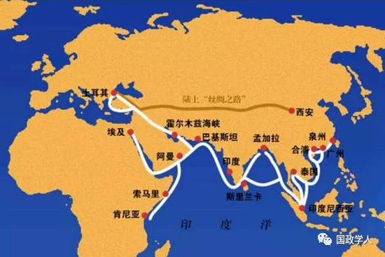
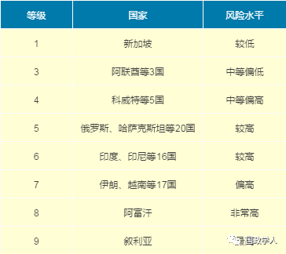

收录于合集
“一带一路”65个国家风险状况分析

**
**
**
**
一带一路 国家风险评级的总体情况
中国信保的国家风险评价模型从政治风险、经济风险、商业环境风险和法律风险4个角度分析和评估一国的国家风险，包含17个一级指标，53个二级指标，基本覆盖了各种类型的国家风险事件。

整体来看，“一带一路”国家评级为5-9级的国家占比为84%，区域绝对风险水平处于相对高位。与上版国家风险参考评级相比，国家风险水平下降的国家有阿富汗、伊拉克等14国，占比21.5%；国家风险水平不变，评级保持稳定的国家有印度、印度尼西亚等37国，占比56.9%；国家风险水平上升，评级下调的国家有保加利亚、克罗地亚等13国，占比20%。
从全球看，越来越多的公司开始运用信用保险工具管理该区域的国家风险，过去三年跨境交易类需求（包括贸易、并购等）保险需求增长达到83%左右，其中亚太地区达到143%。
** **重点区域和国家风险状况分析
**
**
总体上看，该区域有三个突出的风险点。
一是 大国角力 。“一带一路”国家具有重要的地理位置和战略价值，东南亚、南亚、中亚、西亚乃至中东欧都是大国角力的焦点区域，俄罗斯力推“欧亚联盟”、欧盟积极推动“东部伙伴计划”、美国提出建设“新丝绸之路”和“印太走廊”设想等，区域内热点问题不断，大国在伊朗、叙利亚、乌克兰等问题上进行博弈，地缘政治关系相对紧张，区域和国家风险显著。
二是 文明冲突 。由于历史和现实的原因，“一路一带”国家处于东西方多个文明交汇的地区，基督教（天主教、东正教）、伊斯兰教、佛教等的矛盾与冲突、不同民族与种族的矛盾与冲突，呈现易突发、多样性、复杂化、长期化的特点，某一特定事件的爆发可能对周边国家乃至多个国家产生较强的国家风险外溢效应。
三是 国内矛盾 。一路一带国家多处于现代化建设阶段，面临突出的政治转制、经济转轨、社会转型的艰巨任务，国内政治经济的稳定性和成熟度较差，容易引发国家风险。
南 亚
南亚是世界上风险较高的地区之一，恐怖主义和分裂势力严重威胁着地区安全。国家之间也因为领土、宗教和种族等原因而矛盾重重。经济上普遍面临增速缓慢、基础设施严重不足、能源短缺、货币疲软、通货膨胀压力居高不下等问题。
阿富汗是区域内风险较为突出的国家，恐怖主义和地方军阀力量强大，民族和宗教矛盾突出，地缘政治问题突出。
巴基斯坦为7级，自13年大选结束后，国内局势保持平稳，谢里夫政府同军方和司法部门之间矛盾得以缓和，印巴关系也时有改善，经济增长动力依然不足，巴本财年（2013年7月-2014年6月）实际GDP将增长3.4%，CPI同比上涨8.6%。能源短缺十分突出，但较前几年已经出现明显改善。2013年9月，巴基斯坦政府和IMF重新签订贷款协议，避免了可能出现的国际收支危机。
印度为6级，展望为稳定。2014年举行新的大选，新政府会受制于印度国内政治势力林立、地方政党影响增强和内部低烈度内战的影响，改革进程预计仍会受到较大制约。财政赤字、经常账户赤字双双超过国际警戒线，经济增长困境短期内难以根本改观。
**
**
**
**
东南亚
东南亚地区局势基本保持平稳，但面临政治和经济发展转型的压力，不确定因素有所增加。缅甸为7级，降低1级，展望为稳定，评级调升的原因主要为民主化进程顺利，经济活力有所增强。越南为7级，展望为负面。
政治上，深化政治转型是东南亚国家普遍面临的挑战，其中，缅甸、柬埔寨正处于民主化转型初期，原有“一党专政”的政治格局难以维系，民众维权意识高涨，但同时也引发一些社会和政治动荡，民族和宗教矛盾也开始显露出来。在西方势力的推波助澜下，越南和老挝的民主化思潮也开始抬头，要求政治多元化的呼声也越来越大，近期乌克兰危机的外溢效应也对这些国家造成一定影响。泰国政争互不妥协，政治分裂的局面短期内无法改善。据曼谷大学公布的调查结果，泰国政坛各党支持率均大幅下降。执政的为泰党支持率为27%，下降1.2%，总理英拉支持率为24.8%，较去年下降1.9%；民主党支持率为20.3%，下降16.9%，阿披实的支持率为18.7%，下降16.1%。
安全上，缅甸、菲律宾、印度尼西亚、泰国等国均在不同程度上面临恐怖主义和国内分裂势力的困扰。
经济方面，东南亚是世界上经济增速较快的地区之一。近年来东南亚国家经济自由化程度不断提升，外资大量涌入，推动经济快速发展，连续多年增长速度在6%以上。经济风险主要表现为：一是经济结构单一，内生动力不强；二是过于依赖外资，抗外部冲击能力较弱。
中 亚
中亚地区总体形势保持稳定。
政治方面，塔吉克斯坦总统大选、土库曼斯坦议会选举平稳举行；哈萨克斯坦、乌兹别克斯坦总统地位稳固，对全国有较强的掌控力，但接班人隐忧持续显现；吉尔吉斯斯坦各派政治势力围绕金矿国有化、反对派领袖受审等问题内斗不止，政治局势有所动荡，民粹情绪高涨。
经济方面，受国际能源价格波动以及新兴市场国家增长乏力等因素的综合影响，中亚国家经济增速趋缓，但相对良好的经济前景依然可期。其中，哈萨克斯坦继续推行经济多元化战略；乌兹别克斯坦逐步扩大对外开放程度；土库曼斯坦则继续加大基础设施建设投入。
外交和安全方面，“俄进美退”态势相对明显，俄罗斯与中亚国家的经贸合作更趋紧密；安全风险不容忽视，宗教极端主义和恐怖主义仍是重大安全威胁；各国边境冲突时有发生，这也在一定程度上影响了地区稳定。
西 亚
西亚地区局势的不确定性有增无减，未来发展趋势仍扑朔迷离。
叙利亚为9级，仍是区域内焦点国家，巴沙尔政府与西方国家支持的反政府武装之间的僵局在短期内难以打破，虽然巴沙尔政府承受了巨大的外部压力，但战局对其略微有利。
埃及为7级，局势仍将长期动荡，军方仍是主导政局走向的重要力量，将要举行的总统与议会选举难以从根本上解决政治难题，各派政治力量的斗争不会在短期内平息，未来政府能否顺利执政，并推行相关社会经济政策有待进一步观察。
伊拉克为7级，三派政治势力分歧依旧，宗教分歧威胁着国家的统一和稳定，恐怖主义袭击仍时有发生，政治风险依然较高。
伊朗国家风险评级为7级，展望为稳定。与西方国家的关系略有好转，核问题的解决仍需较长时间，在西方国家经济制裁未有实质性缓解之前，其国内经济形势依然严峻。
中东欧
中东欧多国在欧债危机爆发后曾经历了外资大幅、迅速撤出和经济衰退，成为投资者关注的焦点。
乌克兰国家风险评级为6级，展望为负面。乌克兰政局动荡仍将持续；经济增长前景堪忧，主权信用风险增加。目前，全球著名的政治风险经纪商韦莱、MARSH等乌克兰政治风险保险市场暂时关闭，没有新保单生成。但就总体而言，对中东欧国家经济增长前景仍可以保持谨慎乐观态度，爆发地区性动荡的可能性不大。
俄罗斯为5级，展望为负面。韦莱认为，从国际关系看，俄罗斯目前是政治风险保险市场风险程度最大的国家，如果西方加大制裁，政治风险保险费率将会上升。国内政治保持稳定，但经济增长速度明显减缓。如何提升经济活力、减少对能源行业的依赖、提升投资者信心，是其不得不面对的主要问题。
波兰受内阁改组影响，波兰国内主要政策可能出现波动。不过长期来看，波兰政治局势将维持稳定。波兰中央银行行长称，乌克兰局势会对波兰经济政策及货币政策产生不利影响。
来源：国源智库要闻
筛选：汪乐乐
编辑：敖遊
声 明
国政学人微信公众平台系非盈利学术平台。建立初衷是方便广大学人进行学术研究，促进学术的传播和交流，不做任何商业用途。如有任何权利问题，请直接与我们联系。
您可能还会喜欢：